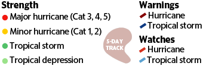

{#
  Nunjucks Templating!
  Homepage: https://mozilla.github.io/nunjucks/
  Docs: https://mozilla.github.io/nunjucks/api.html
#}

{% extends 'layouts/application.html' %}

{% block content %}
  <div class="container">
    <div class="row">
      <div class="table" id="js-data-wrapper">

      </div>
      <div class="legend">
        
      </div>
    </div>
  </div>
{% endblock %}
